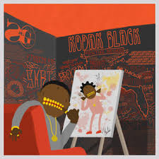

| Contact |
Name |
Email Address |
Phone |
| Info |
Luke Carlyle |
Luke.carlyle@maine.edu |
617-510-1652 |
Kodak Black
Kodak was my favorite rapper before he went to jail.
This is Kodaks mugshot. He was arrest on robbery, false imprisonment, and driving without a license. After all that came out he fell off as a rapper and I lost intrest.
But Kodak does have some old throwbacks that I still like to listen to from time to time. The album Painting Picutres, has some amazing beats like Patty Cake, Tunnel Vision and Top off Benz.

Young Thug
Lil Uzi Vert
Drake
Migos
Home Page